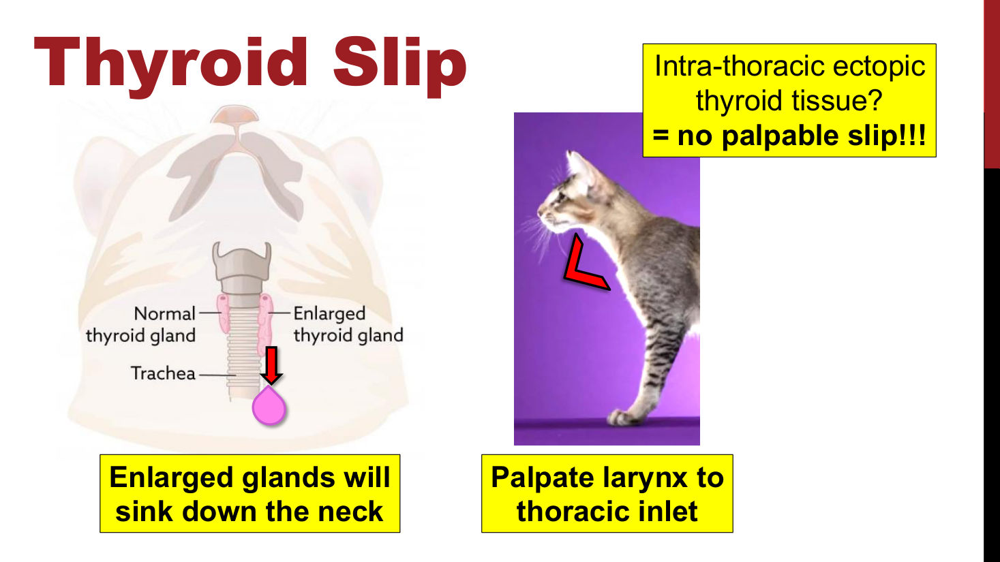
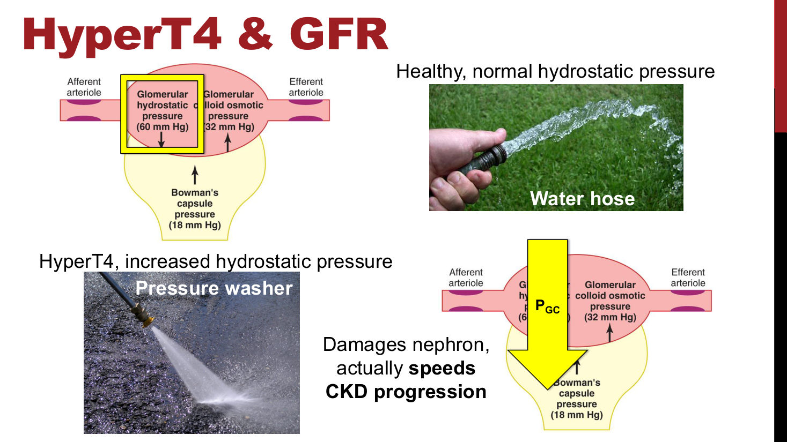
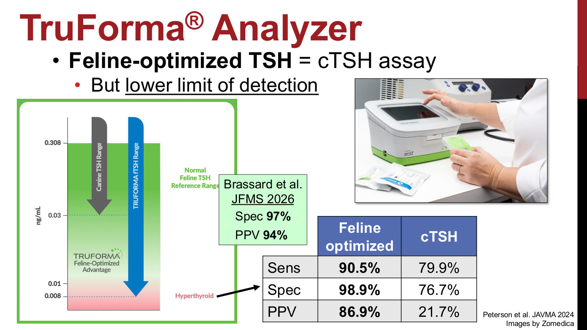
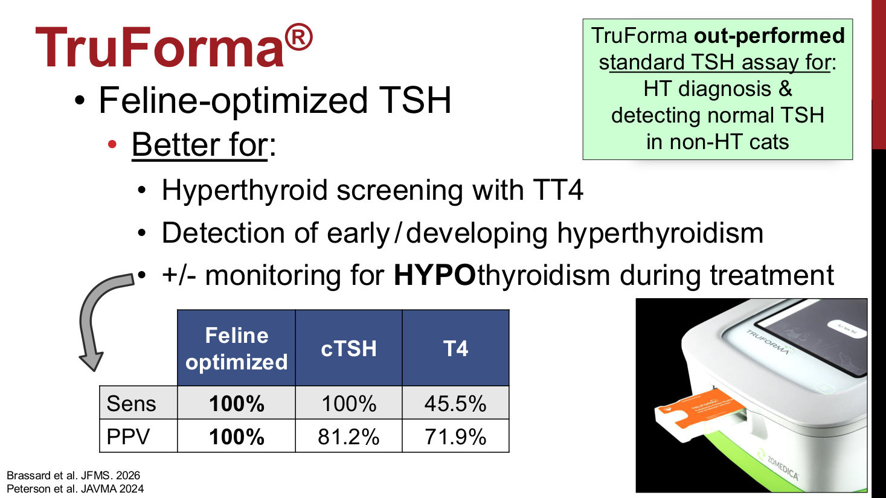
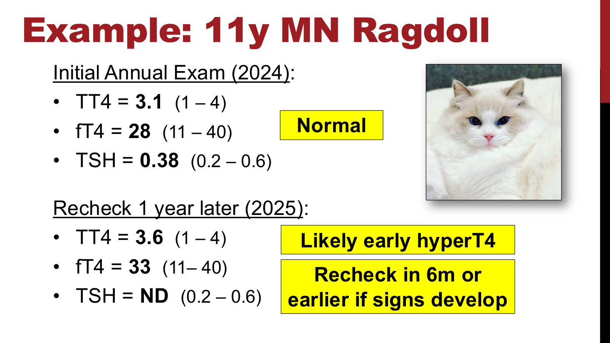
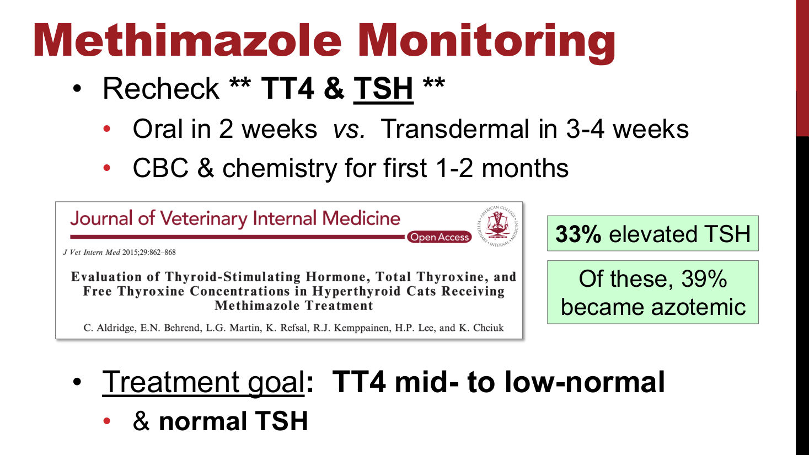
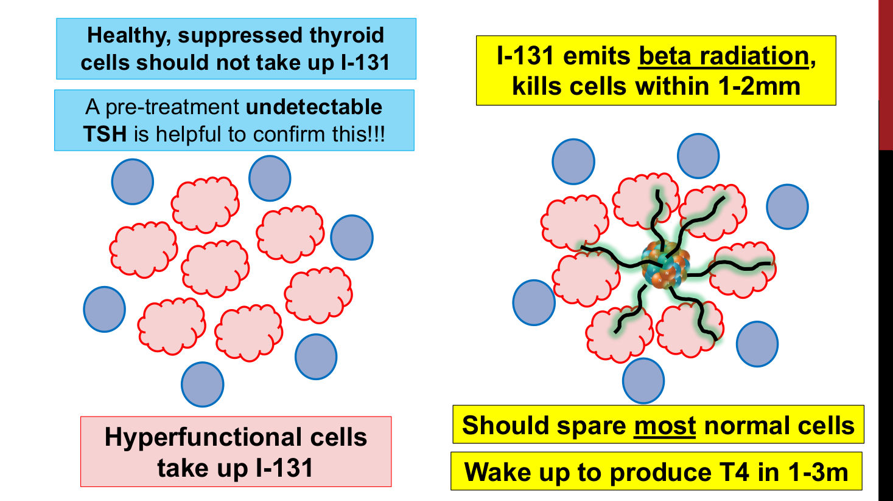
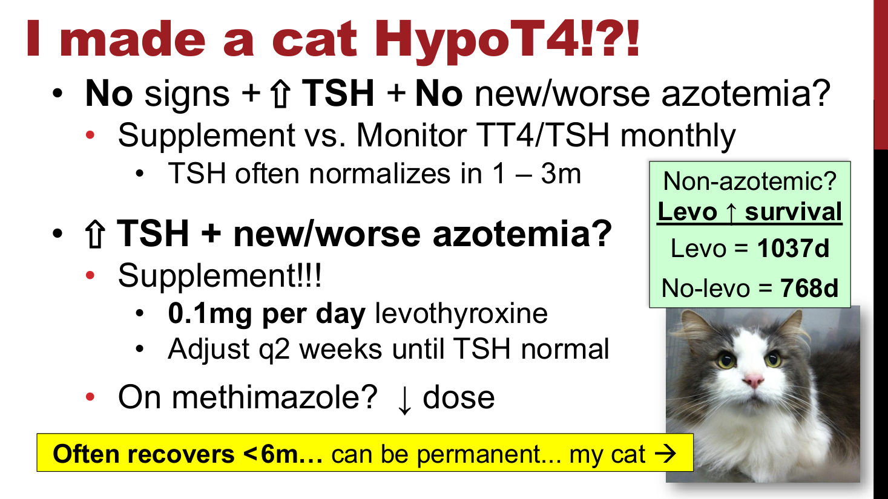
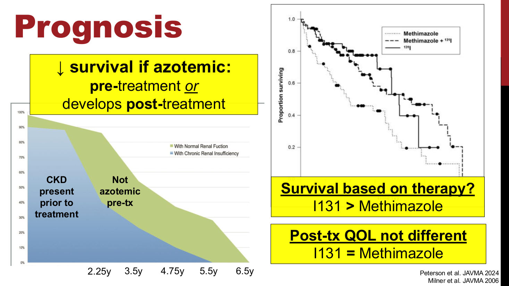

貓甲狀腺功能亢進：診斷、治療與監測
主講：Andrew Bugbee, DVM, DACVIM｜Texas A&M 獸醫學院醫療長、臨床教授
2026 年 10 月 8 日｜VET-KU × Texas A&M 內科研討會｜場次 18
🎧 課堂錄音與逐字稿（Plaud）↗
資料來源標記：
投影片（頁碼＝講義 PDF 頁碼 1–48）
🎤 課堂逐字稿（從講義第 24 頁左右開始）
✍️ 提問 整理時提出的問題
💡 補充 整理者補充（機轉、判讀、交叉參照）
【更正】 逐字稿轉文字錯誤，以講義為準（完整列表見最後一節）
⭐ 必記原則
- 8 歲以上的貓每年驗 TT4；約 90% 的病例只要 TT4 就能診斷
- 不要讓 CKD 貓維持輕度甲亢：甲亢會造成腎絲球高血壓，加速 CKD。先治甲亢，再處理腎病
- 絕對不要只用 fT4 篩檢：部分甲狀腺功能正常的貓 fT4 也會偏高。fT4 一定要和 TT4（± TSH）一起看
- TSH 下降是甲亢最早的指標。TSH 從測得到變成測不到的貓，多數在 6–12 個月內變成明顯甲亢
- 犬用 cTSH 偵測下限 0.03 ng/mL，貓最佳化 TSH 是 0.008 ng/mL；cTSH「測不到」的 PPV 只有約 22%
- y/d 必須是唯一的食物，而且不能和 methimazole 併用
- Methimazole 除了腸胃不適（改經皮劑型即可）之外，其他副作用都要停藥，換劑型沒有用
- 治療中的監測一定要驗 TSH：約 30% 的 methimazole 或 I-131 治療貓會出現 TT4 正常、TSH 升高的亞臨床甲低
- Methimazole 劑量接近 10 mg BID 時，要想到腺癌或異位組織
- 做 I-131 前 TSH 必須測不到；停 methimazole 1–2 週（至少 5 天）、停 y/d 2–4 週
- 甲低＋氮血症的貓存活最差；補 levothyroxine 可以延長存活，任何 TSH 升高都值得和飼主討論補充
場次資訊與錄音說明
▾講者
- 講題〈Hot Cats! Managing Feline Hyperthyroidism〉。"Hot" 是雙關：甲亢貓代謝旺盛、體溫偏高。
- 講者 Andrew Bugbee，DVM、DACVIM，Texas A&M 獸醫學院醫療長兼臨床教授，之前在喬治亞大學（UGA）。
- 這堂接在 Langlois 的犬甲狀腺功能低下（17）之後。
錄音範圍：逐字稿從講義第 24 頁（TruForma）左右開始，前半段（流行病學、症狀、腎臟、TT4／fT4）沒有錄到，第 1–23 頁的內容以講義為主、加上整理者補充。逐字稿最後主持人說「Thank you, Dr. Mike」，應為 Dr. Bugbee 的轉文字錯誤。
1. 流行病學與病理
▾基本概念
- 1978 年在紐約首次被診斷；現在盛行率約 10%。
- 老貓的疾病：95% 在 8 歲以上，確診時平均 13 歲。共病很常見（CKD、心臟、腸胃）。
- 貓遠多於狗。狗的甲亢多半是醫源性（levothyroxine 過量）或甲狀腺癌（還有飲食性，見 17）。
- 70% 為兩側病變。病理：腺瘤樣增生、腺瘤、腺癌（< 3%）。
- 異位甲狀腺組織可以在舌根到心基部之間的任何位置。
補充：兩側病變佔多數，所以單側甲狀腺切除容易復發；胸腔內的異位組織摸不到也切不到，這時 I-131 最有優勢。異位組織對 methimazole 的反應也像腺癌一樣差（見第 11 節）。
2. 臨床症狀與理學檢查
▾症狀：從「代謝」去想
- 甲狀腺激素影響全身每個細胞。正常 T4 是小火慢燒，太多是熊熊烈火，太少是火熄了。
- 常見：體重減輕、食慾旺盛、被毛雜亂無光、嘔吐／下痢、行為改變（躁動、坐立不安、攻擊）、PU/PD。
- 淡漠型甲亢（約 6%）：症狀相反，厭食、體重增加、嗜睡。
- 高血壓造成的標的器官傷害：急性失明、視網膜剝離、眼睛變色或前房出血、急性中樞神經症狀或癲癇。
理學檢查與 thyroid slip
- 被毛變化、過度理毛；BCS／MCS 偏低。
- 聽診：心搏過速、心雜音、奔馬律。
- 腸道增厚，摸起來像繩子（"ropey"）。投影片另提到陣發性運動障礙（paroxysmal dyskinesia）。
- Thyroid slip：腫大的甲狀腺會往頸部下方沉，要從喉部一路摸到胸腔入口。胸腔內的異位組織摸不到 slip。

3. 最小資料庫與共病
▾最小資料庫
| CBC | 生化 | 尿液 | 其他 |
|---|---|---|---|
| 紅血球增多 | ALT 上升（最常見）、ALP 上升、氮血症（約 10–20%）、± 高磷 | USG 不一、± 蛋白尿、± 酮體、± 活性沉渣（UTI） | 血壓 |
會被誤認成其他疾病的變化
- 肝指數可能很高：講者看過 ALT > 900 U/L，肝臟切片卻沒有病變。不應延後治療。
- 心臟變化像 HCM（也可能像限制型或未分類心肌病）：先拍胸腔 X 光排除 CHF，甲亢控制後再做心臟超音波。
- 腸道變化像 IBD 或淋巴瘤：判讀超音波要小心。做腸道切片前一定要先排除 T4 過高！
4. 甲亢與腎臟
▾甲亢會掩蓋 CKD，而且讓它變更糟
- 甲亢提高 GFR，掩蓋腎臟病，但這種提高是有害的。
- 肌肉量少的貓，肌酸酐會高估腎功能，可以加驗 SDMA（IRIS-kidney.com）。
- 腎絲球微血管靜水壓（PGC）：正常像澆花的水管，甲亢像高壓清洗機，會傷害腎元、加速 CKD。
- 迷思：CKD 貓維持輕度甲亢比較好？不！ 任何程度的甲亢都會加速腎功能流失（腎絲球高血壓、蛋白尿、RAAS 活化）。先治甲亢，之後再處理 CKD。

5. TT4、fT4 與 TSH
▾甲狀腺軸與美國的檢驗選項
- 腦下垂體前葉的 TSH 刺激甲狀腺分泌 TT4、fT4。甲亢時 TT4、fT4 ↑↑↑，負回饋讓 TSH 很低或測不到。
| 類型 | 例子 | 可驗項目 |
|---|---|---|
| 外送檢驗所 | Michigan State、Idexx、Antech | TT4、fT4 by ED、犬 TSH |
| 大型院內儀器 | Immulite | TT4、犬 TSH |
| 桌上型院內儀器 | Idexx Catalyst | 只有犬 TT4 |
| 桌上型院內儀器 | TruForma（Zomedica） | TT4、貓最佳化 TSH |
總甲狀腺素（TT4）
- TT4 = 游離 T4 ＋ 蛋白結合 T4。約 90% 的病例只要 TT4。
- 建議：8 歲以上的貓每年驗，生病的成貓也驗。
TT4 落在正常偏高（例：3.6 µg/dL，參考值 1.0–4.0）
| 鑑別診斷 | 說明 |
|---|---|
| 正常貓 | 參考範圍本來就包含靠近上限的健康貓 |
| 輕度甲亢的老貓 | T4 隨年齡下降，健康老貓多在中段到偏低；14 歲貓 3.6 其實是「偏高」 |
| 甲亢 ＋ 非甲狀腺疾病抑制 | 其他疾病把原本更高的 TT4 壓進正常範圍，甲亢被藏起來 |
- 一定要評估病患：臨床症狀？理學檢查？生化？投影片用兩張照片對比：瘦巴巴猛吃的貓 vs. 胖胖狀態好的貓，同樣 3.6 意義不同。
- 高度懷疑甲亢時加驗 fT4 by ED ＋ TSH：fT4 ↑ ＋ TSH ↓ → 很可能是甲亢。
| fT4 | TSH | 判讀（💡 補充） |
|---|---|---|
| ↑ | ↓／測不到 | 很可能是甲亢 |
| 正常 | 正常 | 比較可能是正常貓 |
| ↑ | 正常 | 不支持甲亢；可能是其他疾病讓 fT4 偏高（見第 15 節） |
| 正常 | 測不到 | 可能是早期甲亢；若用犬 cTSH，也可能只是測不到這隻貓的 TSH |
補充：其他選項還有 2–8 週後重驗 TT4（真的甲亢通常會繼續上升）、先治療潛在疾病再驗，或轉診做閃爍掃描。
為什麼不能只驗 fT4？
- 部分甲狀腺功能正常的貓 fT4 會輕度偏高，單獨使用會造成偽陽性。
- 絕對不要只用 fT4 篩檢！ fT4 只能和 TT4（± TSH）一起判讀。
- 例：TT4 2.3（1–4）、fT4 50（11–40）、TSH 0.3（0.2–0.6）→ 很可能是正常的。要評估病患、症狀與檢驗。
TSH 的問題
- TSH 檢驗用犬抗體（cTSH），設計上擅長抓甲低的「高 TSH」，不擅長偵測低濃度。
- cTSH 測不到所有貓的 TSH：低於偵測下限就報 ND，形成假的「測不到」。例：TT4 3、fT4 30、TSH ND。
6. 貓最佳化 TSH（TruForma）
▾偵測下限更低

| 診斷甲亢（Peterson 2024） | 貓最佳化 TSH | 犬 cTSH |
|---|---|---|
| 敏感度 | 90.5% | 79.9% |
| 特異度 | 98.9% | 76.7% |
| 陽性預測值 | 86.9% | 21.7% |
- Brassard et al.（JFMS 2026）：特異度 97%、PPV 94%。
補充：用犬 cTSH 得到「TSH 測不到」時，只有約兩成真的是甲亢，因為很多正常貓的 TSH 本來就低於 0.03。貓最佳化 TSH 能把正常貓的 TSH 測出來，「測不到」才真正有意義。
🎤 適合用在哪裡
- 搭配 TT4 做甲亢篩檢。
- 偵測早期或發展中的甲亢。🎤 TSH 通常是貓開始發病時最先下降的指標。
- ± 治療期間監測是否變成甲狀腺低下。🎤 雖然它是為了偵測低濃度而設計，治療甲亢時仍可用來抓甲低，研究顯示敏感度與 PPV 都優於傳統 TSH。
- TruForma 在診斷甲亢、以及確認非甲亢貓 TSH 正常這兩方面，都優於標準 TSH 檢驗。

| 偵測治療後甲低 | 貓最佳化 TSH | 犬 cTSH | 只看 T4 |
|---|---|---|---|
| 敏感度 | 100% | 100% | 45.5% |
| 陽性預測值 | 100% | 81.2% | 71.9% |
7. TSH 的意義與 Archie
▾🎤 為什麼 TSH 重要
- TSH 降低是甲亢最早的指標。
- 第一次驗、TT4 正常但 TSH 測不到：🎤 單一一次的結果很難解讀。如果用 cTSH，可能只是沒測到；如果用貓最佳化 TSH，可能是早期甲亢。
- 🎤 理想的情況是定期追蹤 TSH：原本測得到，現在下降或突然測不到，這隻貓很可能正在走向甲亢。多數失去 TSH 的貓會在 6–12 個月內變成明顯甲亢。
🎤 病例：Archie（講者自己的貓，11 歲 M/N Ragdoll）
| 2024 年度健檢 | 2025 年複檢 | |
|---|---|---|
| TT4（1–4） | 3.1 | 3.6 |
| fT4（11–40） | 28 | 33 |
| TSH（0.2–0.6） | 0.38 | ND |
| 判讀 | 正常 | 可能是早期甲亢 |
- 🎤 用的是貓最佳化 TSH，所以講者相信 Archie 真的低於該檢驗 0.008 ng/mL 的偵測下限。「我幾乎可以打賭，接下來 6–12 個月他就會明顯升高。」
- 處置：6 個月後複檢，有症狀就提早。

8. 治療選項與 y/d 處方飼料
▾🎤 四種治療
| 根治性 | 內科控制 |
|---|---|
| 放射碘（I-131）、甲狀腺切除術 | Hill's y/d、Methimazole |
- 🎤 講者是內科醫師不是外科醫師，所以不談甲狀腺切除，但要知道它是選項之一。
🎤 Hill's y/d
- 限碘飲食：一般飼料碘含量 ≥ 0.46 ppm，y/d ≤ 0.2 ppm。碘經由鈉碘同向轉運體（NIS）被甲狀腺攝取，原料不足就做不出 T4。
- 貓只能吃這個！ 🎤 只要吃到含碘高的東西就會復發。半室外的貓、多貓家庭（彼此吃不同食物）很難控制好。
- 適口性可能是問題。
- 通常 4–8 週控制；T4 越高越久，有些貓花了 6 個月。🎤 嚴重的病例可能等不了 1–2 個月，要先用其他治療。但現在越來越早發現，y/d 對大多數貓是好選項。
- 不要和 methimazole 併用。🎤 單用 y/d 造成甲低的風險可以忽略，併用 methimazole 時甲低機率會大幅上升。要用就是單一療法。
9. Methimazole：劑量與副作用
▾🎤 機轉與劑量
- 抑制 TPO，阻斷 T4／T3 合成；不會破壞異常組織。🎤 把甲狀腺細胞想成倉庫，TPO 是組裝激素的工人，methimazole 把工人打倒、工廠停工。
- 起始：每隻貓 1.25–2.5 mg PO q12h。🎤 講者通常從 2.5 mg 開始，很輕微的甲亢才用 1.25 mg。
- 每 2 週依監測結果調整，每次以每日 1.25–2.5 mg 的幅度（受限於錠劑大小）。
- 例：1.25 mg BID → 早 2.5 mg、晚 1.25 mg → 再 2 週仍未控制 → 2.5 mg BID。
🎤 副作用
| 副作用 | 課堂補充 |
|---|---|
| 直接腸胃不適 | 最常見。給藥後 30 分鐘到 2 小時嘔吐或下痢，每次都會重複，飼主很快就會打電話來 |
| 醫源性甲低 | 見第 13 節；過去 10 年改變了所有治療方式的監測 |
| 臉部抓傷 | 強烈搔癢，貓會把臉上的皮抓掉；講者看過抓到露出顏面骨的貓 |
| 肝毒性、血液惡液質（血小板減少、嗜中性球減少） | 前 1–2 個月監測 CBC、生化；撐過這段時間之後就不太會發生，不必長期追蹤 |
| 重症肌無力 | 多以巨食道表現（逆流、食道狹窄）；可逆，停藥後約 2 週內恢復 |
🎤 副作用怎麼處理
- 腸胃不適：改經皮劑型，或改用 y/d、I-131。
- 甲低，沒有症狀（TT4 正常、TSH 高）：可密切監測。🎤 但現在多數人建議減量或暫停用藥，再以較低劑量恢復。若同時出現新的或惡化的氮血症，TSH 升高更重要。
- 甲低，有症狀（TT4 低、TSH 高）：停用 methimazole，考慮 levothyroxine 0.1 mg/天。🎤 這會影響存活。停藥後甲狀腺通常在幾週內恢復正常。
- 其他所有副作用 → 必須停藥！ 改 y/d 或轉診 I-131（或由熟練的外科醫師做甲狀腺切除）。
🎤 換劑型沒有用：這些副作用是對 methimazole 本身的反應，不管口服或經皮都一樣。講者看過一隻口服時出現臉部抓傷的貓，被改成經皮劑型繼續用，結果抓到整張臉沒有皮、露出骨頭才來看診。
10. 經皮劑型與監測
▾🎤 經皮 Methimazole
- 適合：兇的貓、焦慮不讓人碰嘴的貓、飼主餵不了藥、口服腸胃不適。
| 口服 | 經皮 | |
|---|---|---|
| 控制所需劑量 | 多數 2.5–5 mg BID | 多數至少 5 mg BID |
| 達到完整效果 | 約 2 週 | 約 3–4 週 |
| 回診調劑量 | 每 2 週 | 每 3–4 週 |
| 起始劑量 | 一樣是 2.5 mg BID | |
🎤 經皮劑型不要太快加量：還沒等到完整效果就一再加量，劑量會疊加，最後過量。
🎤 Methimazole 監測
- 複檢 TT4 和 TSH：口服 2 週後、經皮 3–4 週後；前 1–2 個月加做 CBC 和生化。
- 🎤 以前只驗 TT4。Aldridge 等人（Auburn，JVIM 2015）發現約 33% methimazole 治療貓 TT4 正常但 TSH 升高，只看 TT4 會以為一切正常；其中 39% 出現氮血症。不處理的話，這些貓會早死至少 2 年。
- 所以現在 methimazole 或 I-131 的監測都必須包含 TSH。
- 目標：TT4 在正常範圍中至偏低段，且 TSH 正常。🎤 講者認為只要在參考範圍內就夠了，不要矯枉過正：造成甲低和留下輕度甲亢一樣糟。

11. 長期使用與抗藥
▾🎤 控制之後
- 改 q24h：🎤 一開始用 BID 是為了減少腸胃副作用。控制穩定、用藥至少約 1 個月且沒有副作用後，可以把兩次合併成一天一次（2.5 mg BID → 5 mg SID），提高飼主順從性。
- 劑量 > 10 mg BID 仍無效：🎤 有些貓用到 10–15 mg BID。接近 10 mg BID 時要警覺：甲狀腺腺癌對 methimazole 有抗性，異位甲狀腺組織的表現也像腺癌（雖然是良性）。轉診做 CT，或更好的是閃爍掃描。
- 用了好幾年後失效：🎤 methimazole 只阻斷酵素，不破壞組織，甲狀腺腫會持續長大，需要更多藥。例如 5 mg BID 控制了 4 年突然失控，不一定是腺癌（但要列入鑑別）。8–10 歲就確診的貓，這輩子很可能需要加量。
12. 放射碘 I-131
▾🎤 基本資料
- 和甲狀腺切除同屬根治性治療。破壞過度活躍的組織，保留被抑制的正常細胞，讓正常細胞之後「醒來」恢復製造激素。
- 大多是單次皮下注射；隔離規定各州不同，平均約 5 天。🎤 人類病患打完隔天就回家、尿液直接進一般汙水系統，動物的規定嚴格得多。
- 費用：講者在 UGA 時約 2,500 美元。
- 單次注射成功率約 90–95%；≤ 5% 治療失敗需要第二次注射；< 5% 復發（🎤 不是治療出錯，而是之後又長出功能亢進的組織，任何時間都可能發生）。
- 飼主選擇的原因：33% 想要根治、25% 無法餵藥。
🎤 講者一定會先告知飼主：做了 I-131 仍可能需要餵藥。如果造成臨床甲低，就得吃 levothyroxine。通常是暫時的，但飼主要在同意注射前就了解。
🎤 轉診前要先試 Methimazole 嗎？
- 多數機構已不要求，因為不管結果如何，都還是建議治療甲亢。
- 值得考慮的情況：未治療、且有明顯氮血症的貓（IRIS 第 2 期後段以上，肌酸酐 > 2.5）。🎤 打了 I-131 之後貓帶有放射性，能接觸、治療的程度非常有限。先試藥是為了看 CKD 被揭露後有多嚴重，評估在隔離期間會不會代償失調。
- 肌酸酐 < 2.5（IRIS 1 期、2 期前段）不需要。
🎤 轉診前準備
- 主動告知飼主有 I-131 這個選項。數據：64% 由獸醫告知，42% 自己上網查到。🎤 「不用餵藥」和「被迫餵藥」的差別，會影響飼主對獸醫建議的滿意度。
- 全身狀況穩定：至少 CBC、生化、尿檢，± 影像，盡量把異常都查清楚。目的只有一個：確保貓能自己在隔離室待約 5 天。
- 🎤 講者遇過死在隔離期間的貓，都有已知共病，例如一隻大細胞型腸道淋巴瘤的貓（飼主因為無法餵藥仍堅持治療）。死在隔離室很麻煩：代謝停止讓 I-131 排不掉，遺體要放到同位素衰變夠了才能處理。所以對穩定度要求很嚴。
- TT4 高、TSH 測不到。🎤 「TSH 沒有測不到，我就不打 I-131。」TSH 會刺激甲狀腺細胞攝碘；只要有 TSH，正常細胞也會吃進放射碘而被殺死，治療後甲低的機率就會上升。
- 停 methimazole 1–2 週（至少 5 天）。🎤 I-131 本身不需要停藥；機構如果不做閃爍掃描，前一天停藥、隔天打也可以。但多數機構用閃爍掃描決定劑量，methimazole 會增加鎝（technetium）的攝取，讓甲亢看起來比實際嚴重。病情嚴重撐不了 2 週也沒關係，至少 5 天。
- 停 y/d 2–4 週。🎤 證據不多，但身體處於缺碘狀態，一給碘就會全部吸走。吃 y/d 期間打 I-131，一定會造成治療後甲低。
- 常合作的機構，先問清楚他們的停藥規定。
🎤 I-131 的作用原理

- 功能亢進的細胞吸收 I-131；健康、被抑制的細胞不應吸收。
- I-131 放出 β 射線，只殺死 1–2 mm 內的細胞，所以能保住大部分正常細胞。
- 治療前 TSH 測不到，有助於確認正常細胞處於被抑制狀態。
- 正常細胞在 1–3 個月內醒來（🎤 通常至少要 1 個月）。
🎤 治療後監測
- 驗 TT4 和 TSH，在 1、3、6、12 個月複檢。
- 多數 1 個月內控制，完整反應可達 3–6 個月。很多機構3 個月前不會再打第二次，避免造成甲低。
- < 5% 出現臨床甲低：需要 levothyroxine（0.1 mg/貓 q24h 起始），🎤 有臨床甲低就要補充，才有預後上的好處。通常 1–3 個月內正常細胞醒來，可以停藥。
13. 亞臨床甲低（醫源性甲低）
▾🎤 定義與發生率
- 約 30% 的治療貓會發生：methimazole 約 30%，I-131 也約 30%。
- 診斷：TT4 正常 ＋ TSH 升高。一定要監測 TSH！
- 🎤 例：TT4 正常，看起來控制得很好，但 TSH 1.47，對貓來說是非常高的值，代表身體在「大喊」需要更多甲狀腺激素。
- 🎤 I-131 劑量的演變：講者當住院醫師時，每隻貓都打固定的 4 mCi，遠超過多數貓所需，加上當時只驗 TT4，很多甲低都沒被抓到。發現這個問題後，多數機構降低劑量，現在常見 < 1 到 3 mCi，並以閃爍掃描決定。
- 🎤 兩側病變要破壞的組織多，給較低劑量；單側腺瘤通常可以給較高劑量，因為另一側被抑制、不會受影響。
🎤 為什麼要在意
- 15–49% 治療後出現氮血症；甲低的貓更容易。
- 甲狀腺功能正常、出現氮血症：存活 2.8 年 vs. 沒有氮血症 4.3 年。
- 甲低、出現氮血症：存活顯著更短，456 天 vs. 905 天。這群貓的預後最差。
- 🎤 補充甲狀腺素可以移除這個負面預後因子，把貓推回存活較好的那一邊。有趣的是生活品質通常不受影響，受影響的是壽命長度。
🎤 我把貓治成甲低了！？

| 情況 | 處置 |
|---|---|
| 沒有症狀 ＋ TSH ↑ ＋ 沒有新的／惡化的氮血症 | 補充，或每月監測 TT4／TSH；TSH 常在 1–3 個月內恢復 |
| TSH ↑ ＋ 新的／惡化的氮血症 | 補充！ Levothyroxine 0.1 mg/天，每 2 週調整直到 TSH 正常 |
| 正在用 methimazole | 減量；🎤 即使減量或繼續用，仍建議補充到 TSH 正常 |
- 🎤 「惡化的氮血症」：肌酸酐比治療前基準值上升 > 20%。
- 🎤 新研究顯示，沒有氮血症的 TSH 升高貓補 levothyroxine 也能延長存活（1037 vs. 768 天）。所以新的建議是：任何 TSH 升高，都要和飼主討論補充 levothyroxine。
- 通常 6 個月內恢復，但可能是永久的。🎤 講者住院醫師時治療的自己的貓就永久甲低，每天兩次 levothyroxine 吃了約 6 年。這就是為什麼要先告訴飼主：做了 I-131 不代表以後都不用餵藥。
14. 預後
▾🎤 氮血症決定預後

- 治療前或治療後出現氮血症，存活都會下降；治療前後都有氮血症的貓預後最差。沒有氮血症的貓，存活通常相當好。
- 依治療方式：I-131 > methimazole。🎤 但講者認為差距不大，不會跟飼主說 I-131 比較好。
- 治療後生活品質：I-131 = methimazole。🎤 講者兩者同等推薦，讓飼主依目標和預算決定。
補充：講者在投影片寫 I-131 > methimazole、在台上卻說差距不大，兩者並不矛盾——研究顯示有存活優勢，但講者認為臨床上不足以成為推薦某一種治療的理由。
參考資源
- 2023 AAHA 犬貓內分泌疾病指引（Bugbee 為第一作者）。
- 2016 AAFP 貓甲狀腺機能亢進處置指引（JFMS）。
- 課後問題併入座談會。
15. 課後提問與補充
▾✍️ 提問💡 補充 甲狀腺功能正常的貓，fT4 為什麼會輕微偏高？（📄 21）
核心觀念
血中 T4 超過 99.9% 和蛋白質結合，fT4 不到 0.1%。結合狀態稍微被干擾（例如游離比例從 0.05% 變 0.08%），fT4 就上升 60%，TT4 卻幾乎不變。甲狀腺的分泌量其實沒有增加。
| 原因 | 機轉 |
|---|---|
| 非甲狀腺疾病（NTI）——最主要 | 約 6–20% 生病但甲狀腺正常的貓 fT4（ED）偏高（Peterson et al. JAVMA 2001）。尿毒素、游離脂肪酸和 T4 搶結合位置；低白蛋白讓結合蛋白變少；組織的 T4 轉運被抑制；肝臟脫碘酶活性下降讓清除變慢 |
| 藥物 | Heparin（試管內產生游離脂肪酸）、furosemide、部分 NSAIDs 會把 T4 從蛋白上擠下來 |
| 檢體與檢驗 | 脂血、存放不當、分析誤差；參考範圍涵蓋 95%，本來就有約 2.5% 正常貓高於上限 |
- NTI 貓的典型組合：TT4 正常或偏低、fT4 偏高、TSH 正常。
- 回到 📄 21 的例子：TT4 在正常範圍中段、TSH 正常，兩者都不像甲亢，只有 fT4 不合 → 很可能是正常的，下一步是找出那個其他疾病。
- fT4 的用途是「確認」，不是「篩檢」。單看 fT4 偏高就診斷甲亢，可能讓一隻其實是 CKD 的貓吃 methimazole，腎功能更差。
- 交叉參照：17 犬甲低第 16 節的 13 歲貓 NTI 病例。
✍️ 提問💡 補充 TT4 落在正常偏高要怎麼想？（📄 20）
- 先看貓：沒有症狀就定期追蹤；有甲亢樣症狀就加驗 fT4 by ED ＋ TSH，fT4 高、TSH 低就很可能是甲亢。
- 特別注意「甲亢 ＋ 其他疾病」：NTI 把 TT4 壓進正常範圍，但對 fT4 的影響較小，所以這時 fT4 才派得上用場——前提一樣是和 TT4、TSH 一起看。
- 詳細的鑑別表見第 5 節。
Take-home、更正表與參考資料
▾Take-home：檢驗組合怎麼讀
| 情境 | TT4 | fT4 (ED) | TSH | 判讀／處置 |
|---|---|---|---|---|
| 典型甲亢 | ↑↑ | ↑ | 測不到 | 治療 |
| 正常偏高、高度懷疑 | 高正常 | ↑ | ↓／測不到 | 很可能甲亢 |
| NTI、甲狀腺正常 | 正常／↓ | ↑ | 正常 | 找其他疾病（📄 21） |
| 早期甲亢（Archie） | 正常 | 正常 | 測不到（貓最佳化） | 6 個月後複檢 |
| 控制良好 | 中至低正常 | — | 正常 | 維持 |
| 亞臨床甲低 | 正常 | — | ↑ | 減量／補 levothyroxine，討論補充 |
| 臨床甲低 | ↓ | — | ↑ | 停 methimazole、補 levothyroxine |
| 可以打 I-131 | ↑ | — | 測不到 | 停 MMI 1–2 週、y/d 2–4 週 |
更正表（逐字稿轉文字錯誤）
| 逐字稿 | 應為 |
|---|---|
| Dr. Mike | Dr. Bugbee |
| as the heart or cat starts | as the cat starts |
| Beyond optimized TSA testing | feline-optimized TSH testing |
| 0.8 nanogram per milliliter | 0.008 ng/mL（📄 23） |
| diet as well as metformin | diet as well as methimazole |
| built whitey／Hills I.D.／feline idi／BILV-1D／pills like white D | Hill's y/d |
| cats who are five years old, one out of nine | （轉文字不清，意指嚴重甲亢的貓） |
| other hypothyroidism therapies／sole therapy for hypothyroidism | hyperthyroidism（口誤） |
| the thymus／benzodiazepine／immunosuppressant／thiamazole／thiazol／metimazole／thymusol／eumethosal／methadone | methimazole（thiamazole 為同一藥物的歐洲名） |
| iodine-induced thyrotoxicity | iatrogenic hypothyroidism |
| facial psoriasis／facial furitis | facial pruritus |
| new or progressive thyrotoxicemia／edema／euthyemia／azoemia | azotemia |
| Transcarb | Transdermal |
| iodogenic | iatrogenic |
| Charlie Aldred／Charlie Allport（Canada, Auburn） | C. Aldridge 等人（Auburn），JVIM 2015（📄 36） |
| about 40% of that 33% also developed hypothyroidism | 39% 出現氮血症（📄 36） |
| cufal dosing | q12h（BID）dosing |
| a non-therapeutic therapy | a non-definitive therapy |
| a toxic thyroid tissue | ectopic thyroid tissue |
| Iodine-31／I131／R31／Iron 31／I141／viral 31 | I-131 |
| severe hypothyroidism（肌酸酐 < 2.5 段落） | severe azotemia／decompensation |
| talk about with hypoplastic | （轉文字不清） |
| sign out of office on their own via the internet | find out on their own via the internet（📄 40） |
| centigrphy | scintigraphy |
| happy fibrocytes | happy thyrocytes（正常甲狀腺細胞） |
| start producing adequate amounts of iodine 31 | thyroid hormone |
| We can talk about levothyroxine and TSH | TT4 and TSH（📄 42） |
| up to 50% of cats post-treatment | 15–49%（📄 44） |
參考資料
Bugbee A. Hot Cats! Managing Feline Hyperthyroidism. VET-KU × Texas A&M IM Conference, 2026-10-08（講義 48 頁、「完整記錄」逐字稿 PDF）。
課堂錄音與逐字稿（Plaud）。連結（從講義第 24 頁左右開始；有轉文字錯誤，請對照更正表）
Aldridge C, Behrend EN, Martin LG, et al. Evaluation of thyroid-stimulating hormone, total thyroxine, and free thyroxine concentrations in hyperthyroid cats receiving methimazole treatment. J Vet Intern Med. 2015;29:862–868.
Peterson ME, et al. JAVMA 2024（貓最佳化 TSH；治療後甲低與存活）。
Brassard et al. J Feline Med Surg 2026（TruForma 貓最佳化 TSH）。
Blunschi et al. Vet Sci 2025；Williams TL, Peak KJ, et al. JVIM 2010；Williams TL, Elliott J, et al. JVIM 2010；Adams WH, et al. Vet Radiol Ultrasound 1997（治療後氮血症與甲低）。
Milner RJ, et al. Survival times for cats with hyperthyroidism treated with iodine 131, methimazole, or both. JAVMA 2006.
Peterson ME, Melián C, Nichols R. Measurement of serum concentrations of free thyroxine, total thyroxine, and total triiodothyronine in cats with hyperthyroidism and cats with nonthyroidal disease. JAVMA 2001;218:529–536（💡 補充引用）。
Bugbee A, et al. 2023 AAHA Selected Endocrinopathies of Dogs and Cats Guidelines. JAAHA 2023;59:113–135.
Carney HC, et al. 2016 AAFP Guidelines for the Management of Feline Hyperthyroidism. J Feline Med Surg 2016;18:400–416.